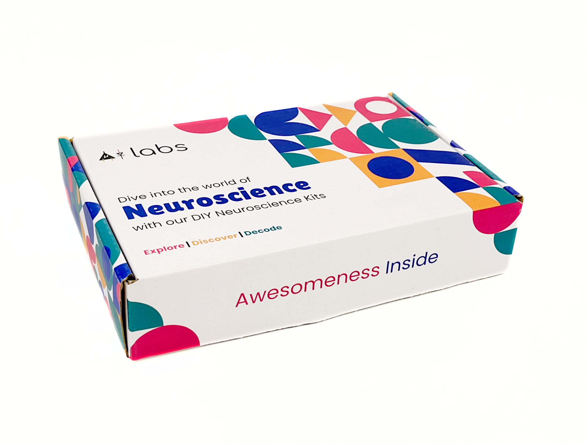
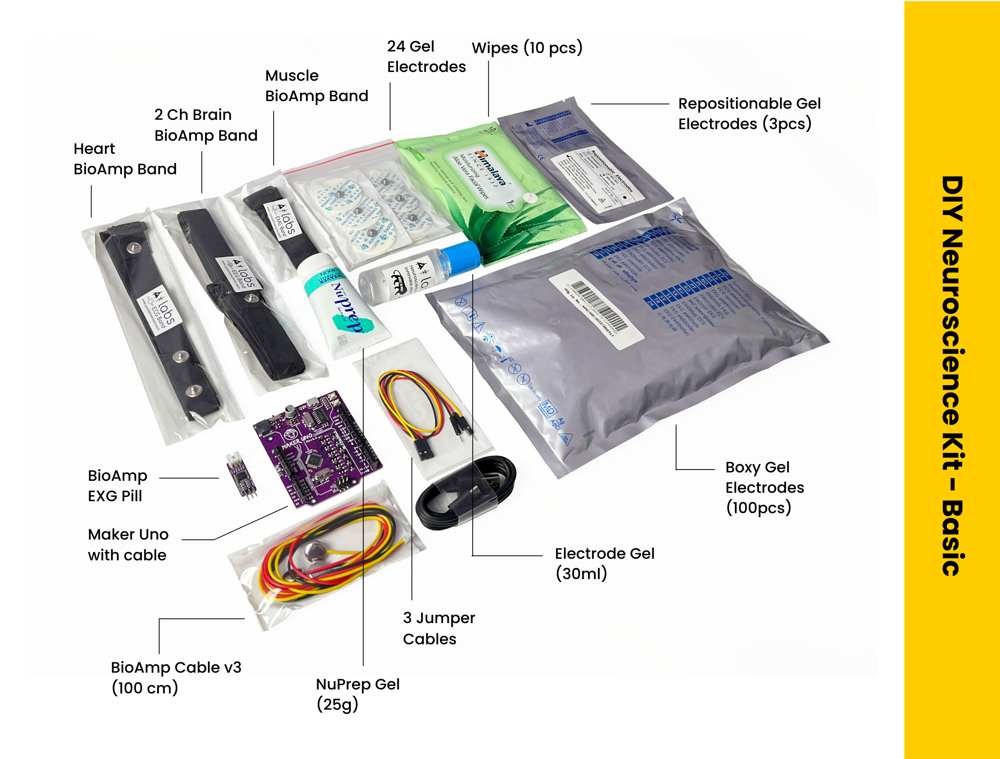
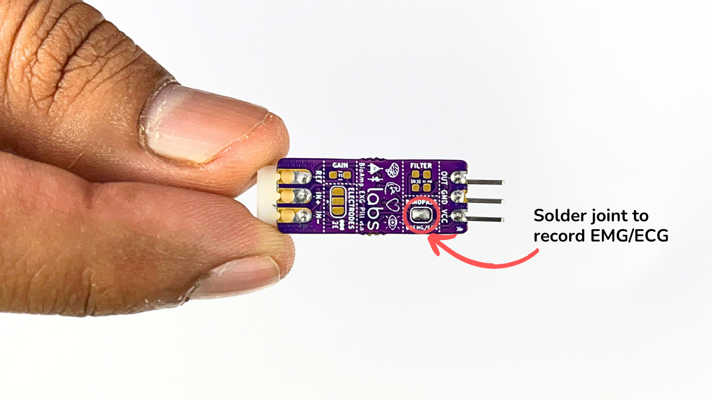
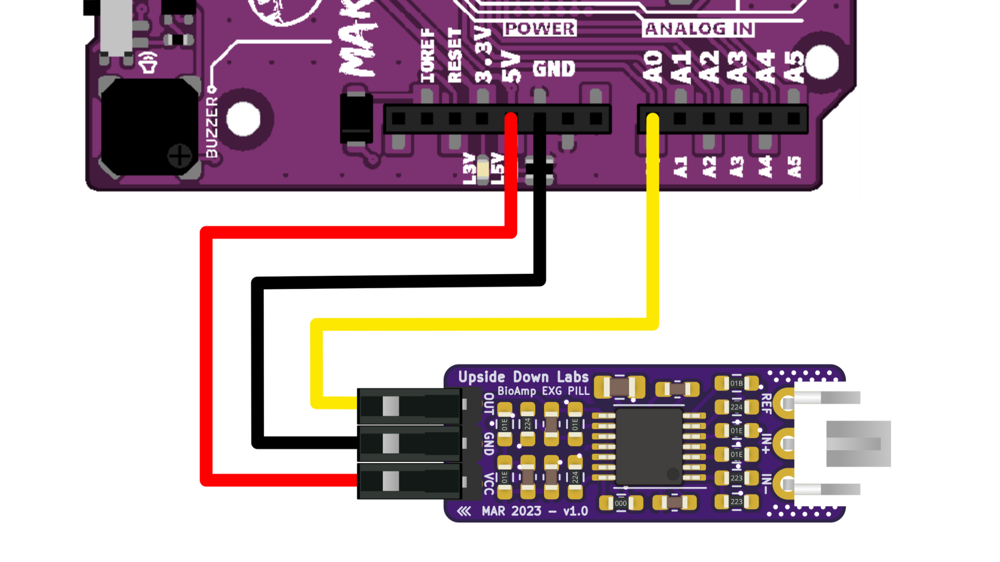
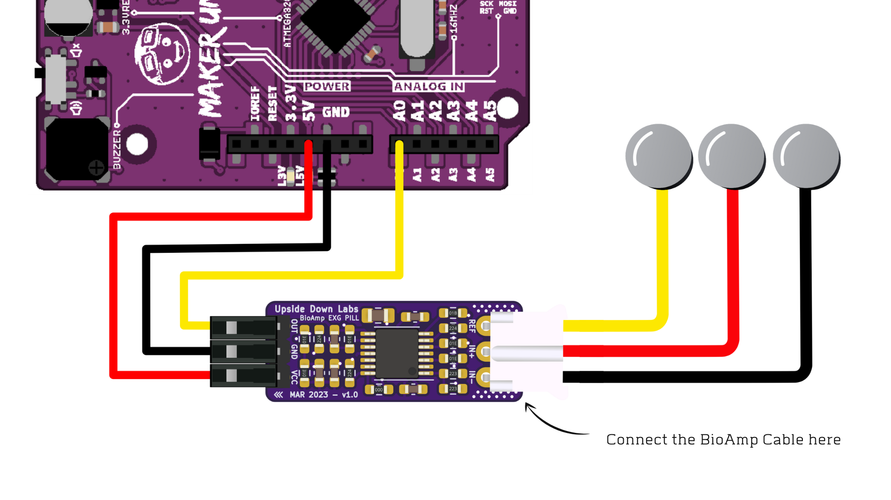

Kit Dasar Neurosains DIY#
Ringkasan#
Kit ini sempurna untuk siswa, peneliti dan hobiis yang ingin mulai menjelajahi neurosains.
Baik itu mempelajari gelombang otak, memantau ritme jantung, menganalisis gerakan otot, atau melacak gerakan mata,
kit DIY ini menyediakan platform yang mudah diakses dan edukatif untuk memahami kompleksitas fisiologi manusia dan
mengembangkan aplikasi praktis di bidang interaksi manusia-komputer, dan seterusnya.

Isi Kit#
Dari papan pengembangan (Maker UNO), BioAmp EXG Pill, kabel BioAmp v3, kabel jumper, elektroda gel, pita BioAmp berbasis elektroda kering hingga kit persiapan kulit, ini mencakup semua yang Anda butuhkan untuk memulai proyek HCI/BCI yang luar biasa.

Membuka kotak kit:
Persyaratan Perangkat Lunak#
Untuk menggunakan Kit Dasar Neurosains DIY Anda, Anda akan memerlukan perangkat lunak yang disebutkan di bawah ini. Instruksi tentang cara menggunakannya disediakan nanti di panduan.
Arduino IDE (Unduh ini untuk mengunggah firmware Chords arduino ke papan pengembangan Anda)
Chords Web (Gunakan aplikasi web open-source ini untuk memvisualisasikan sinyal biopotensial Anda)
Visual Studio Code (atau editor kode pilihan Anda lainnya)
Python (Untuk menjalankan skrip Chords-Python)
Chords Python (Gunakan skrip python open-source ini yang dirancang untuk merekam dan memvisualisasikan sinyal biopotensial)
Note
Firmware Chords Arduino identik untuk Chords Web dan Chords Python, jadi Anda hanya perlu mengunggah kode sekali, dan Anda siap.
Anda dapat memilih Chords Web atau Chords Python untuk merekam dan memvisualisasikan sinyal biopotensial Anda berdasarkan kebutuhan Anda. Jika Anda penasaran, Anda dapat mencoba keduanya satu per satu.
Menggunakan Kit#
Kit ini dibuat sedemikian rupa sehingga bahkan pemula dapat menggunakannya dan memulai merekam sinyal biopotensial dari tubuh mereka untuk menjelajahi bidang neurosains dengan membuat proyek HCI/BCI.
Langkah 1 (opsional): Konfigurasi untuk EMG/ECG#

BioAmp EXG Pill secara default dikonfigurasi untuk merekam EEG atau EOG, jadi jika Anda merekam salah satu dari dua sinyal tersebut Anda dapat melewati langkah ini. Tetapi jika Anda ingin merekam ECG atau EMG berkualitas baik, maka disarankan untuk mengonfigurasinya dengan membuat sambungan solder seperti yang ditunjukkan pada gambar di atas.
Note
Bahkan tanpa membuat sambungan solder, BioAmp EXG Pill mampu merekam ECG atau EMG juga tetapi sinyal akan lebih akurat jika Anda mengonfigurasinya.
Langkah 2: Hubungkan Maker UNO#

Hubungkan VCC ke 5V, GND ke GND, dan OUT ke Analog pin A0 dari Maker UNO Anda melalui kabel jumper yang kami berikan. Jika Anda menghubungkan OUT ke pin analog lainnya, maka Anda harus mengubah INPUT PIN di sketch arduino yang sesuai.
Warning
Berhati-hatilah saat menghubungkan ke daya, jika pin daya (GND & VCC) ditukar, BioAmp EXG Pill Anda akan hangus dan menjadi tidak dapat digunakan (DIE).
Langkah 3: Menghubungkan kabel elektroda#

Hubungkan kabel BioAmp ke BioAmp EXG Pill dengan memasukkan ujung kabel ke konektor JST PH seperti yang ditunjukkan di atas.
Langkah 4: Persiapan Kulit#
Oleskan Gel Persiapan Kulit Nuprep pada permukaan kulit di mana elektroda akan ditempatkan untuk menghilangkan sel kulit mati dan membersihkan kulit dari kotoran. Setelah menggosok permukaan kulit secara menyeluruh, bersihkan dengan tisu alkohol atau tisu basah.
Untuk informasi lebih lanjut, silakan lihat langkah-langkah detail Panduan Persiapan Kulit.
Langkah 5: Penempatan Elektroda#
Kami memiliki 2 opsi untuk mengukur sinyal, baik menggunakan elektroda gel atau menggunakan Pita BioAmp berbasis elektroda kering. Anda dapat mencoba keduanya satu per satu.
Setelah Anda membuat koneksi, kembali ke sini untuk melanjutkan ke langkah berikutnya.
Langkah 6: Mengunggah kode#
Hubungkan Maker Uno ke laptop Anda menggunakan kabel USB (Tipe A ke Tipe B). Pergi ke repositori github Chords Arduino Firmware, buka folder
AVR-NANO-UNO-MEGAdan salin tempel sketch arduino di Arduino IDE yang Anda unduh sebelumnya.Tautan untuk sketch arduino: Chords Arduino Firmware for Maker Uno
Uncomment
#define BOARD_MAKER_UNOdi kode.Pergi ke
tools>board>Arduino AVR boardsdan pilih Arduino UNO. Di menu yang sama, pilih port COM di mana Maker Uno Anda terhubung. Untuk mengetahui port COM yang benar, putuskan sambungan papan Maker UNO Anda dan buka kembali menu. Entri yang hilang harus port COM yang benar. Sekarang klik tombol upload.
Warning
Pastikan laptop Anda tidak terhubung ke charger dan duduk 5m jauh dari peralatan AC apa pun untuk akuisisi sinyal terbaik.
Langkah 7: Menyiapkan Chords Web#
Kunjungi chords.upsidedownlabs.tech.
Klik tombol “Visualize now”.
- Di bagian bawah, Anda dapat melihat tombol untuk mengakses berbagai aplikasi:
Chords Visualizer: Gunakan aplikasi ini untuk visualisasi data real-time, perekaman dan manajemen data, opsi filter, dan dukungan multi-channel.
FFT Visualizer: Gunakan aplikasi ini untuk memvisualisasikan sinyal EEG yang difilter secara real-time, grafik FFT, band frekuensi EEG, dan lilin beta untuk menentukan fokus Anda.
Serial Wizard: Antarmuka ini menyediakan visualisasi data serial real-time menggunakan plotter serial dan monitor, rendering data yang dioptimalkan, pemilihan baud rate dan opsi untuk beralih antara mode.
Klik salah satu tombol sesuai kebutuhan Anda, pilih port COM dan klik OK. Anda akan dapat memvisualisasikan sinyal Anda di layar.
Langkah 8: Menyiapkan Chords Python#
Karena Anda telah mengunggah firmware ke Maker UNO Anda, gunakan skrip python kami dan ikuti langkah-langkah yang diberikan di dokumentasi Chords-Python untuk streaming lsl, logging data CSV, output verbose dengan statistik detail dan pelaporan kesalahan. Tidak hanya itu, Anda mendapatkan antarmuka web lengkap untuk mengakses berbagai aplikasi (seperti ECG dengan detak jantung, EMG dengan envelope, GUI channel, plotter CSV, dll.) yang dapat Anda gunakan untuk menganalisis sinyal Anda lebih lanjut dan membuat proyek HCI/BCI.
Beberapa Ide Proyek#
Upside Down Labs di Instructables:
Ini adalah beberapa ide proyek tetapi kemungkinannya tak terbatas. Jadi buat proyek Human Computer Interface (HCI) dan Brain Computer Interface (BCI) Anda sendiri dan bagikan dengan kami di contact@upsidedownlabs.tech.